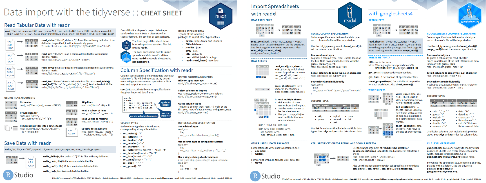
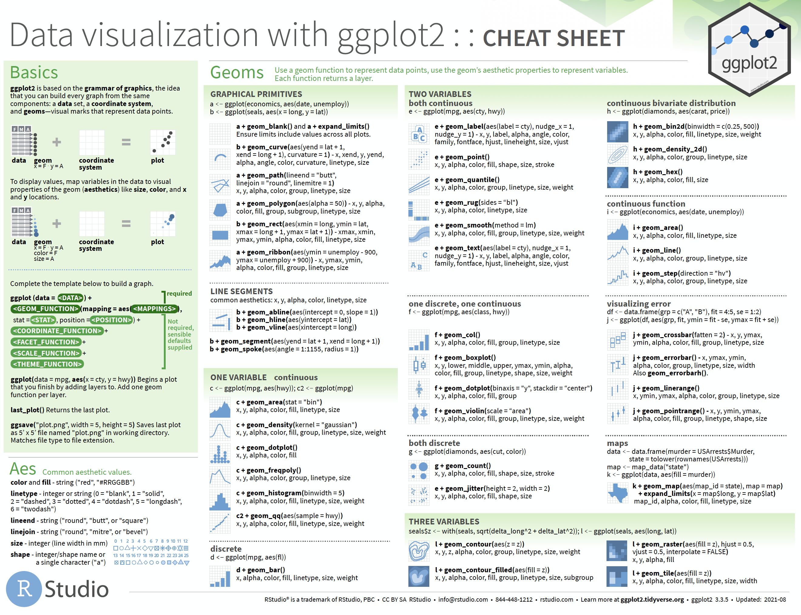
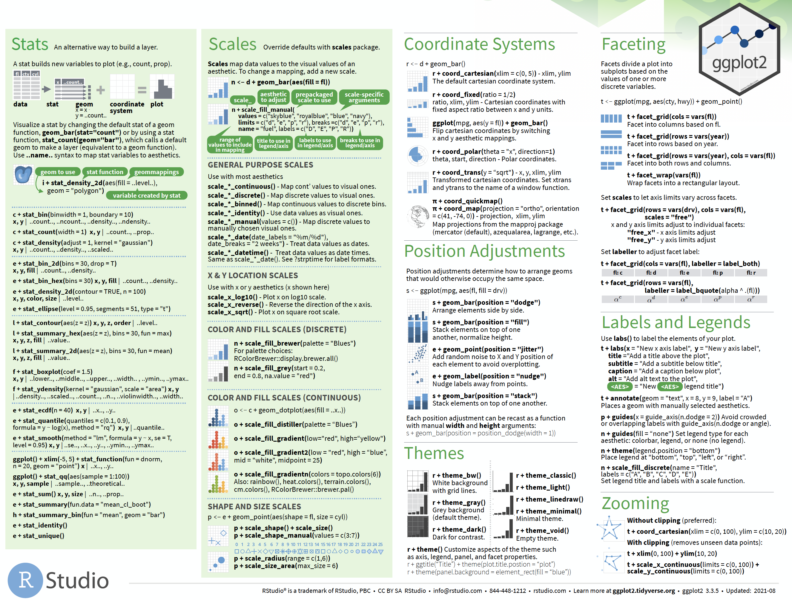

Welcome to cheatsheetR!
The goal of cheatsheetR is to provide R exercises from RStudio’s excellent cheatsheets.
Installation
You can install the development version of cheatsheetR like so:
# install.packages("devtools")
devtools::install_github("mjfrigaard/cheatsheetR")Example
This is a basic example:
library(cheatsheetR)
library(learnr)
## basic example code
learnr::run_tutorial("import", package = "cheatsheetR")Cheatsheet tutorials
Below are the tutorials based on the cheatsheet contents.
Data import with readr, readxl, and googlesheets4
These exercises cover importing data with the readr, readxl, and googlesheets4 packages. Download the cheatsheet as a PDF here.

## run local
learnr::run_tutorial("import", package = "cheatsheetR")Click here to run in your browser.
Data transformation with dplyr
These exercises cover the dplyr package. dplyr provides a comprehensive ’grammar of data manipulation, providing a consistent set of verbs that help you solve the most common data manipulation challenges”. Download the cheatsheet as PDF here.
The examples in the dplyr cheatsheet have been split into two tutorials:
Tidy
The Data tidying with tidyr cheatsheet is broken into two parts. Read more about the tidyr package, which is designed to help you create tidy data. Download the cheatsheet here.
We’ve split the examples on the cheatsheet into two tutorials:
Part 1
These exercises cover an overview of tibbles and reshaping tidy data using the pivot_ functions, splitting and combining columns, and dealing with missing and incomplete data.

## run local
learnr::run_tutorial("tidyr-p1", package = "cheatsheetR")Click here to run in your browser.

Data visualization with ggplot2 cheatsheet
Part 1

## run local
learnr::run_tutorial("ggpplot2-p1", package = "cheatsheetR")Click here to run in your browser.
Part 2

## run local
learnr::run_tutorial("ggpplot2-p2", package = "cheatsheetR")Click here to run in your browser.
Extra tutorials
Below are additional topics not covered in the RStudio cheatsheets:
Command-line intro
These exercises don’t come from a cheatsheet, but they do cover some common command-line tools worth knowing.
## run local
learnr::run_tutorial("commandline", package = "cheatsheetR")Click here to run in your browser.
Atomic vectors
This provides a brief introduction to R’s most common object: the vector.
## run local
learnr::run_tutorial("atomic-vectors", package = "cheatsheetR")Click here to run in your browser.
S3 vectors
This introduces more complex vectors (factors, dates, date-times and difftimes).
## run local
learnr::run_tutorial("S3-vectors", package = "cheatsheetR")Click here to run in your browser.
data.frames
An introduction to rectangular (spreadsheet) data in R.
## run local
learnr::run_tutorial("dataframes", package = "cheatsheetR")Click here to run in your browser.
More to come!